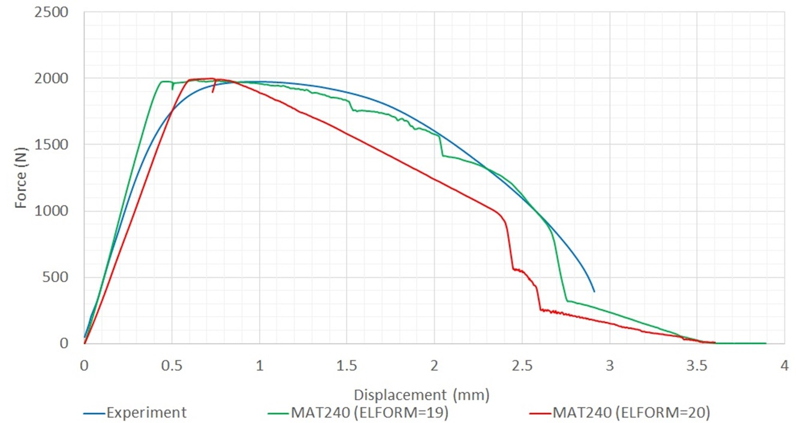
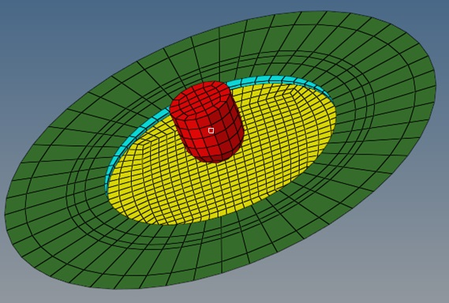
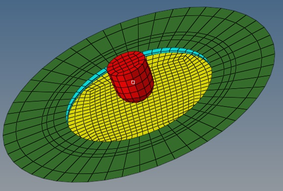

Masterand: FEM-Simulation und Materialmodellierung
Kautex Textron GmbH, Bonn
Aufgabe
| Thema | Explicit Simulation for Material Modelling of an Adhesive and a Sealant in the Battery Housing of an Automotive |
| Ziel | Vorschlag eines Materialmodells für den Klebstoff und Dichtstoff zwischen Polyamid 6 (PA6) und Aluminium-Schutzabdeckungen des Batteriegehäusesystems im Automobil |
| Ansatz | Einzellappenscherprüfungen werden für einen Klebstoff und einen Dichtstoff durchgeführt. Die F-S-Kurven (Kraft-Verschiebung) werden verwendet, um das Materialverhalten zu modellieren. Das modellierte Material wird mit Durchschlag-Impact-Tests validiert, und basierend auf den Ergebnissen wurden Empfehlungen für das am besten geeignete Material für die Anwendung des Unternehmens ausgesprochen. |
| Materialmodelle | MAT1, MAT24, MAT169 & MAT240 in LS-DYNA |

Einzellappenscherprüfungsaufbau

Simulation der Einzellappenscherprüfung in LS-DYNA

Modelliertes Material mit MAT240 für den Klebstoff
Modelliertes Material mit MAT240 für den Dichtstoff

Durchschlag-Impact-Testaufbau zur Validierung
 

Durchschlag-Impact-Test des Klebstoffs

Durchschlag-Impact-Test des Dichtstoffs

Werkzeuge
Über das Unternehmen
Mit mehr als 5.000 Mitarbeitern an 30 Standorten in 13 Ländern ist Kautex Textron einer der führenden Automobilzulieferer der Welt. Kautex ist ein führendes Unternehmen in der Entwicklung und Produktion von Kunststoff-Treibstoffsystemen, einschließlich SCR-Systemen, Kurbelwellen und Nockenwellen, traditionellen und innovativen Hybrid-Treibstoffsystemen sowie Kunststoff-Verpackungslösungen für die Industrie. Das Unternehmen steht an der Spitze der neuen Mobilitätsära und führt den Übergang von Stahl zu Kunststoff-Treibstoffsystemen an. Es bietet auch Kamerasysteme und Sensorreinigungssysteme für (semi-)autonome Fahrzeuge sowie Batteriesysteme für Hybrid- und vollelektrische Fahrzeuge. Kautex setzt sich dafür ein, die Bedürfnisse der Verbraucher zu erfüllen und die Richtung der Mobilität der Zukunft zu beeinflussen, wobei der Fokus auf Innovation, Anpassungsfähigkeit und Teamarbeit liegt.
Unternehmenslink: Kautex Textron GmbH